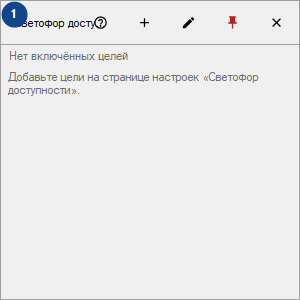
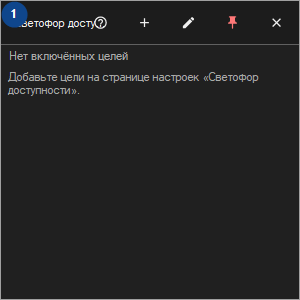

Светофор доступности
Для чего это окно
Плитки для ваших узлов, сайтов, папок и дисков; проверки идут, пока CyrFlip запущен, результаты хранятся только в памяти.


Порядок действий
Прочитайте пояснения к номерам, выберите нужные значения и продолжите командой окна.
Элементы
1. Светофор доступности
Выберите или введите значение для соседней подписи. Проверьте его перед продолжением.
Ваши сочетания клавиш